会津である。
猪苗代である。
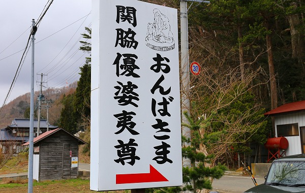
猪苗代湖の北東に
関脇優婆夷尊という神様がいる。
会津地方では優婆尊は
おんばさま、
あんばさまと呼ばれ、広く安産の神とされている。
以前紹介した奥会津の
橋場のばんばも優婆尊の一種である。
要は見た目は奪衣婆のような垂れたオッパイ丸出しの婆神様なのだ。
その会津のおんばさまの中で最も有名なのが、ここ関脇優婆夷尊なのだ。
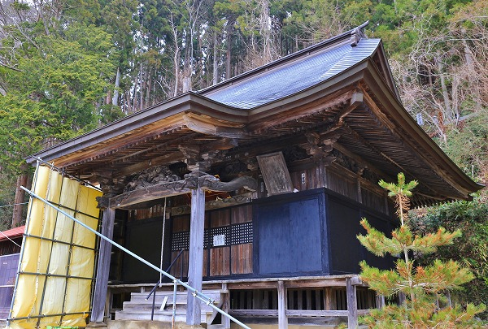
訪れたこの日も東京ではすっかり春だというのに、みぞれまじりの寒風が吹きまくりのメチャ寒い陽気だった。
恐らく猪苗代湖からの冷たい風がダイレクトに吹いてくるのだろう。
冬など風雪共に堪らないだろう。
猪苗代湖に面した方向に風除けの壁がかけられていた。
建物自体も普通なら窓や開口部になっているであろう部分も板で塞がれており、開いているのは正面の扉だけ。
で、その扉を開けて堂内に入る。
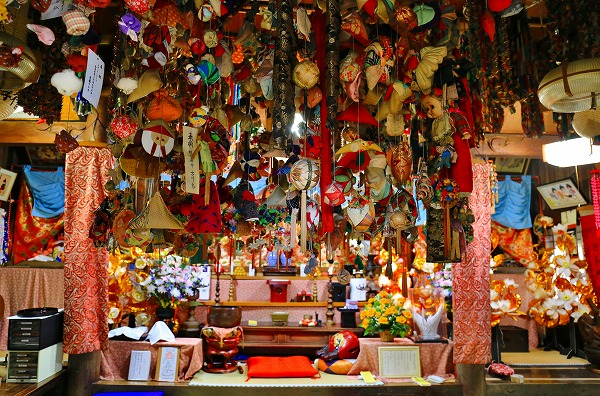
…うぎゃ！
天井からの吊るし物が多すぎて正面が見えませんよ。
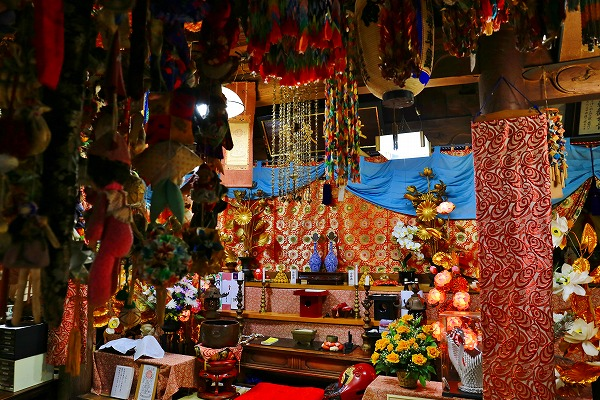
脇に回って見ると正面の祭壇には幕が張られていてその奥を伺う事は出来ない。
秘仏なのかな。
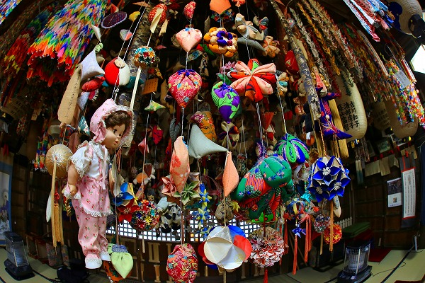
にしても凄いのは天井から下がっている大量の奉納物。
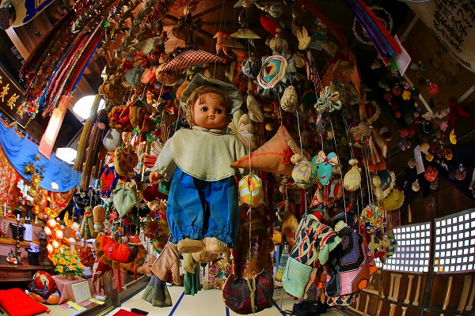
安産や子宝を祈願して人形や着物、その他の飾り物が大量に奉納されているのだ。
関都では参拝者に麻糸としゃもじをわけるという。
麻糸は力糸ともいい、
お産が軽くなるようにとの思いが込められている。
また、
子宝を授かりたいときは人形を借りていくと子供が出来るという。
そして
乳の出が良くなりたい人は豆の入ったおはじきを譲り受けると乳の出が良くなるという。
いずれも願いが叶った際は倍にして帰すというルールがあるので、このように
倍々に増えて行ってしまったのだろう。
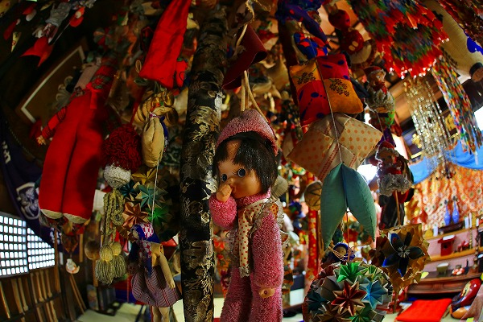
こんなにたくさんの奉納物ｆが吊り下げられていて天井抜けないのか？と心配になるレベルの奉納物だった。
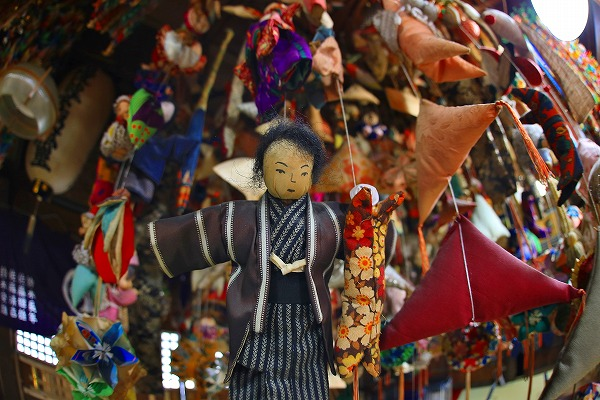
猪苗代の片隅にある激地味なお堂の中にこんなに大量の奉納物がぶら下がっているとは想像だにしなかったのでマジ震えました…。
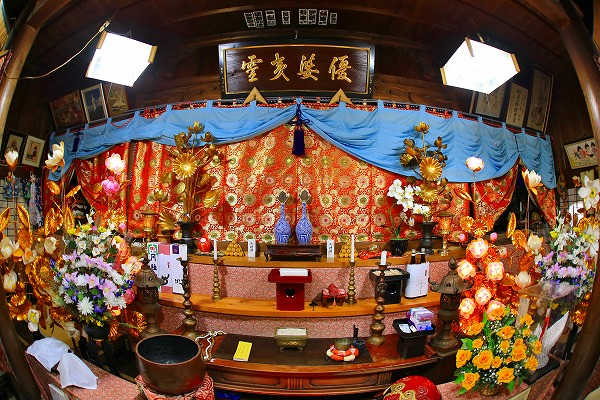
正面の祭壇には優婆夷霊とあった。
本尊の如意輪観音と共に優婆尊が祀られているのだろう。
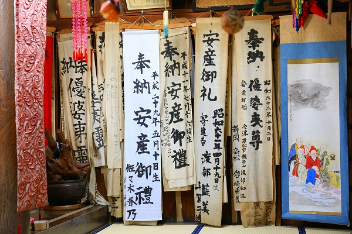
祭壇の右側には大量の幟が。
やはり安産祈願の幟が多い。
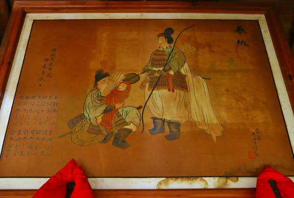
架かっていた絵馬。
弓矢を持った女性に赤ん坊を捧げている。
神功皇后と竹内宿祢のシーンなのだろう。昭和7年の奉納、
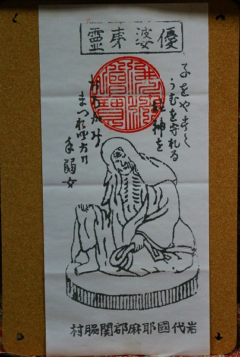
祭壇脇にあった御朱印代わりの紙札。
長い間、会津の女性を守って来た神様である。
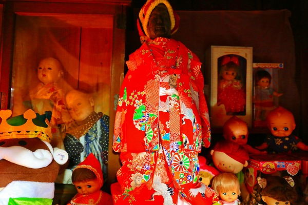
祭壇の左には着物を着た石像が。
どこか津軽の地蔵を思わせる。
その周りを囲むように
たくさんの人形が奉納されている。
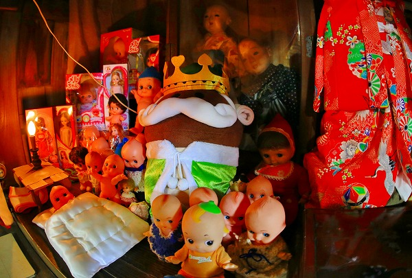
古い人形も中々の迫力だったが、
布団をかけたキューピーちゃんも意味ありげでグッと来た。
単に古くから伝わる信仰、というだけでなく新しい要素も盛り込まれるのが産育信仰の特徴なのかな、と感じた。
猪苗代の
厳しい自然環境において子を産む事、子を育てることは正に命懸けだったのだろう、そんな真剣な願いが充満する空間だった。
後日調べてみるとこの会津地方にはおんば様だけでなく
様々な産育信仰があることが判ったのだが、それはまた次の機会で。
参考文献 「安産・極楽浄土・橋守 知られざる信仰 おんば様」（石井明夫 歴春ブックレット24）